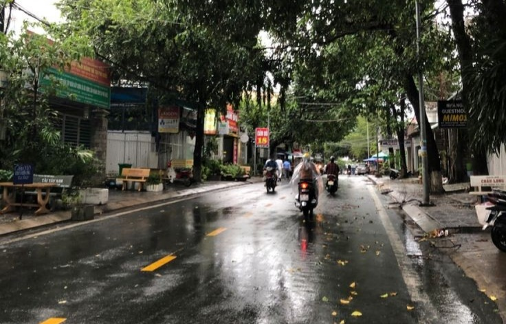

Naila

Pada suatu hari ada seorang mahasiswa rantau yang selalu berjalan kaki untuk pergi ke kampus. Ia kuliah dari pukul 09.50 pagi hingga pukul 16.30 sore. Baginya suasana pagi di kota perantauan pasti akan damai dan tentram begitupula pada sore hari. Namun perbedaaan suasana di sore di hari tentu dilengkapi dengan suasana dan perasaan yang lelah.
ada yang pulang dari kantor dan ada juga yang berjemur dari pagi hingga sore hanya untuk sebuah rupiah, tiba tiba terlintas dipikiran mahasiswa tersebut apasih yang di cari di dunia ini sampai ada yang mati matian untuk mencari rupiah namun ada juga yang hanya duduk namun saldo di rekeningnya selalu terisi. tentu alasannya adalah seorang anak. lantas apa yang dilakukan mahasiswa itu disini? apakah hanya untuk sekedar menuntut ilmu? apa yang membuat orang tua mahasiswa tersebut percaya pada anaknya untuk pergi dari rumah dan pergi ke kota yang jauh dan bahkan belum ia injak sebelumnya hanyak untuk mencari ilmu?
Aulya

Night ride adalah kegiatan berkendara di malam hari dengan berbagai kendaraan, seperti mobil, sepeda motor, sepeda, atau kuda. Kegiatan ini biasanya dilakukan untuk menikmati suasana malam kota atau menjelajahi destinasi tertentu.
Night ride bisa menjadi sarana untuk menjalin relasi, silaturahmi, dan mengeratkan tali persaudaraan. Kegiatan ini juga bisa menjadi alternatif untuk mengakhiri hari yang penat.
Night ride biasanya dimulai sekitar pukul 8 atau 9 malam hingga sekitar tengah malam. Perjalanan night ride bisa memakan waktu berjam-jam sehingga disarankan untuk membawa bekal, minum,dan cemilan.
Raissa
.jpg)
Sejarah Kebangkrutan VOC (Vereenigde Oostindische Compagnie)
VOC atau Perusahaan Hindia Timur Belanda, didirikan pada tahun 1602 dan merupakan salah satu perusahaan dagang pertama yang memiliki kekuasaan untuk melakukan perdagangan, memungut pajak, dan berperang atas nama pemerintah Belanda. Dalam perjalanan sejarahnya, VOC mengalami masa kejayaan dan akhirnya mengalami kebangkrutan pada akhir abad ke-18. Berikut adalah beberapa faktor yang berkontribusi terhadap kebangkrutan VOC:
1. Persaingan yang Meningkat
2. Korupsi dan Penyalahgunaan Kekuasaan
3. Biaya Operasional yang Tinggi
4. Perang dan Konflik
5. Krisis Ekonomi di Eropa
6. Pengelolaan yang Buruk
7. Kebangkrutan Resmi
Akhir Riwayat VOC resmi dibubarkan pada 31 Desember 1799. Semua asetnya, termasuk utang, diambil alih oleh pemerintah Belanda. Kebangkrutan VOC menjadi pelajaran penting tentang manajemen perusahaan besar dan risiko monopoli.